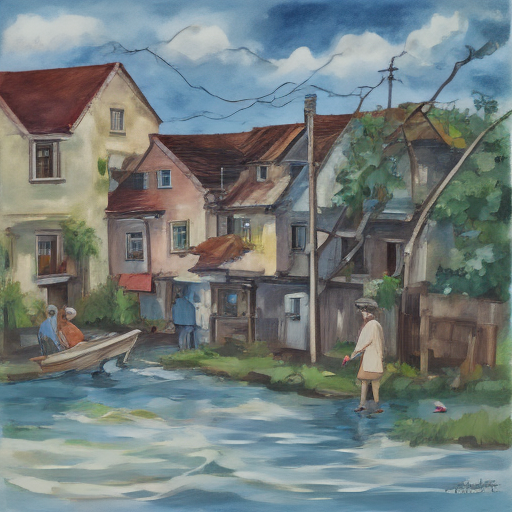

Today, as Typhoon Champi approached our coastal town, I found myself drawn into a small community effort to help James Graham, the elderly neighbor who had recently lost his wife. The winds were howling and rain was drenching us all as we worked together to shore up his house's foundation, which seemed to be just teetering on the brink of collapse. As the storm battered our efforts, I couldn't help but feel that despite its ferocity, this moment brought a tiny glimmer of hope amidst the tumult. James Graham’s home was slowly dwindle back into safety.

Keywords: Typhoon Champi, James Graham, Drinking water supplies dwindle
Fictional diary entry.